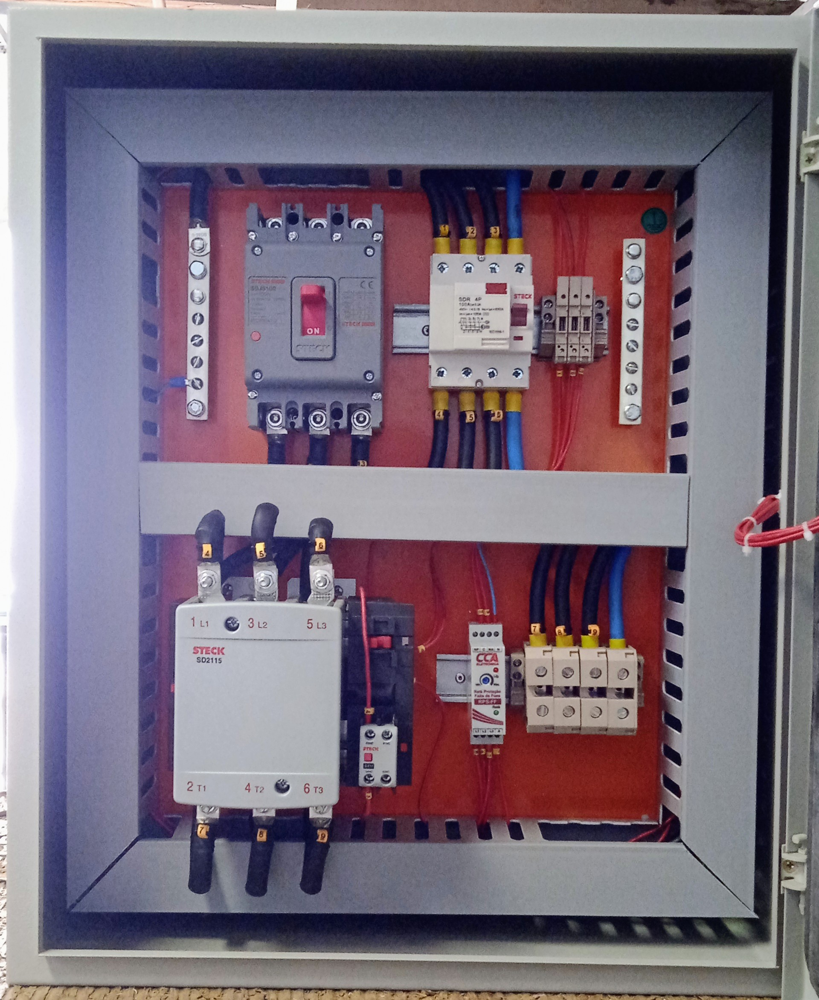
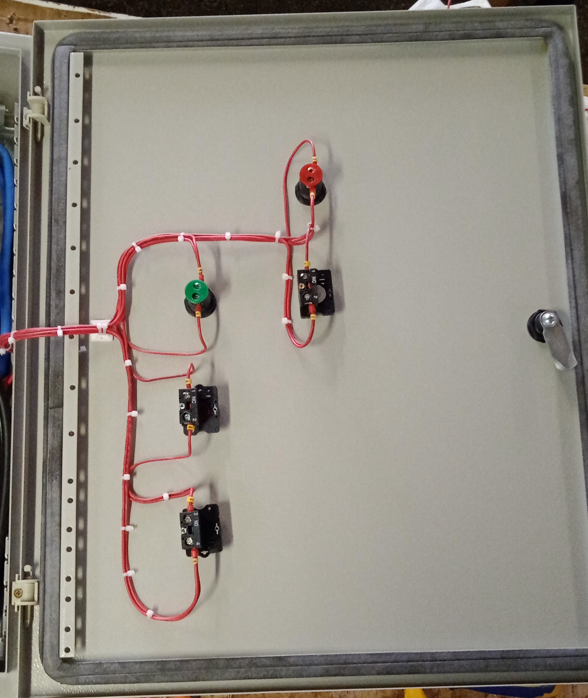
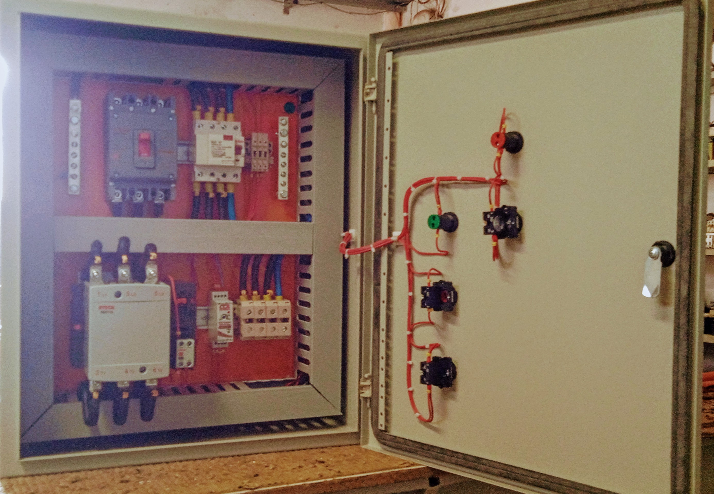
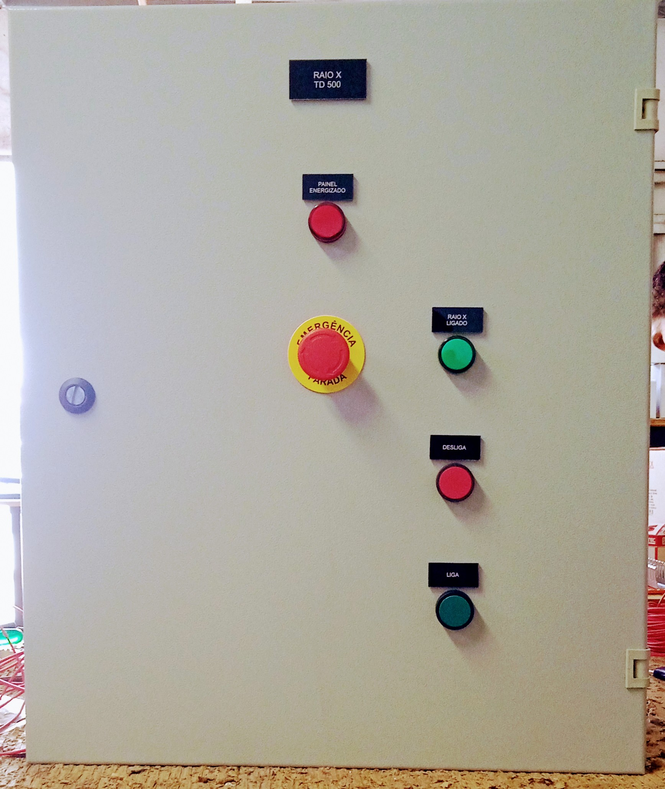
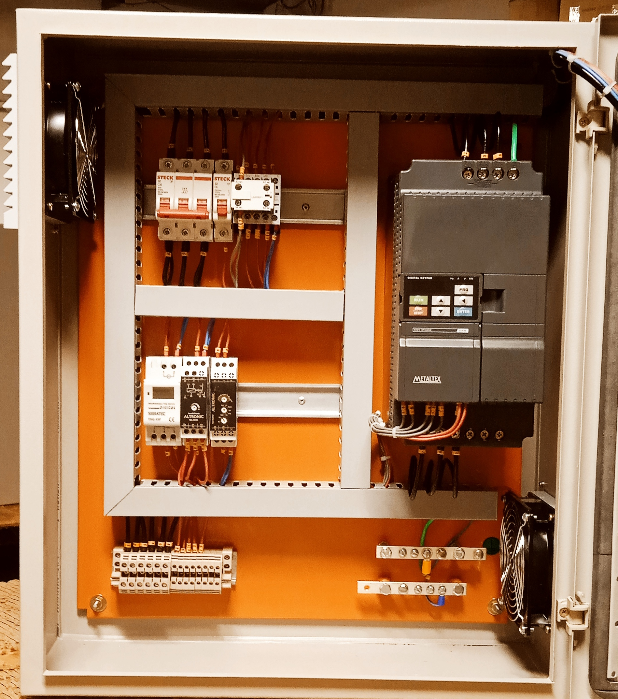
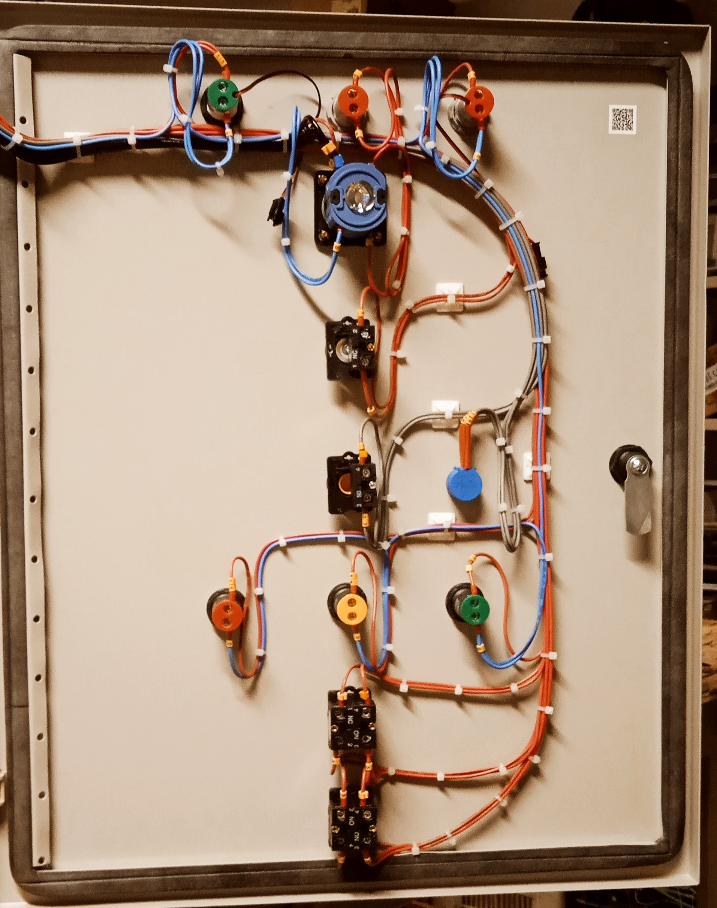
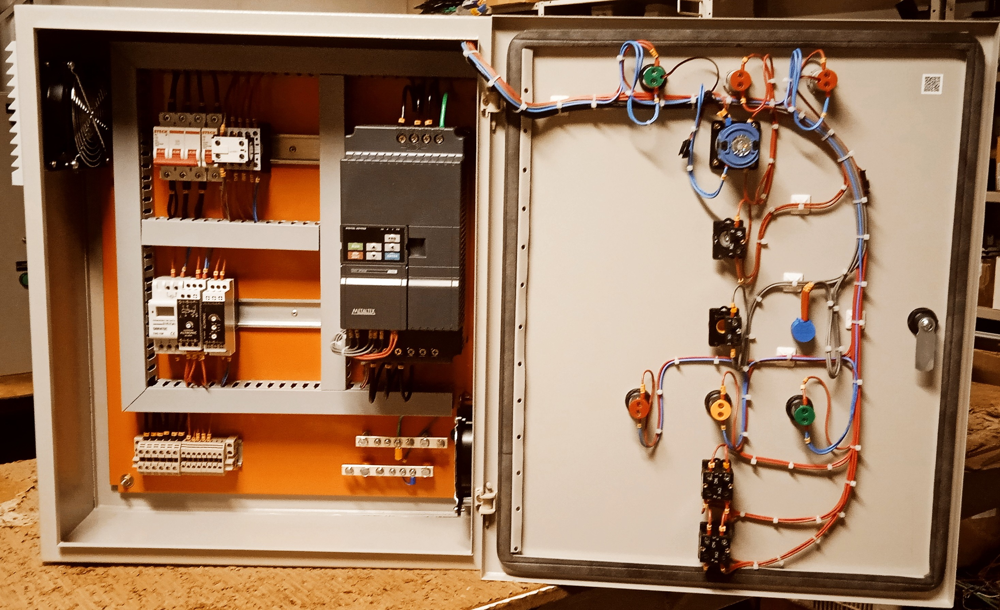
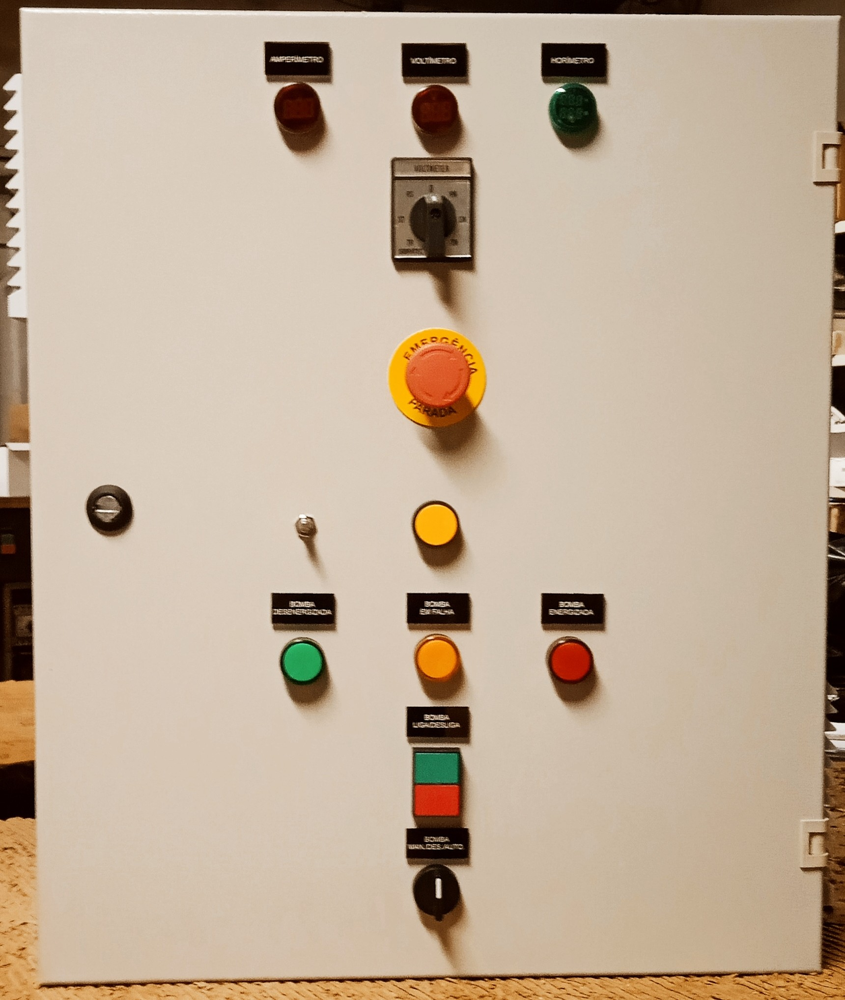
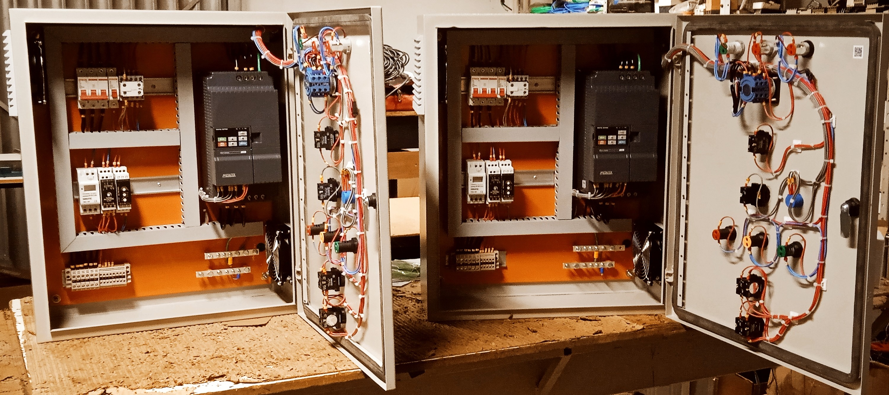
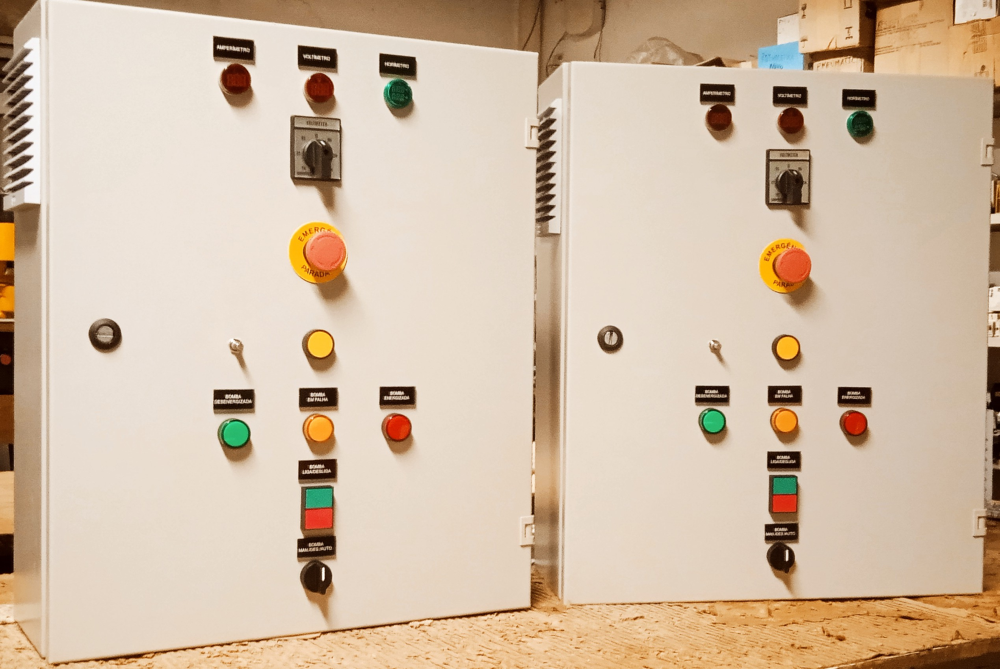

Quadros de comandos são comumente usados em acionamentos de motores.
Os principais tipos partida de motores são:
Esse é um quadro com acionamento de partida direta usando um contator de 100A, feito para uma máquina de Raio X.




Montagem de quadro com inversor para o acionamento de um motor:





